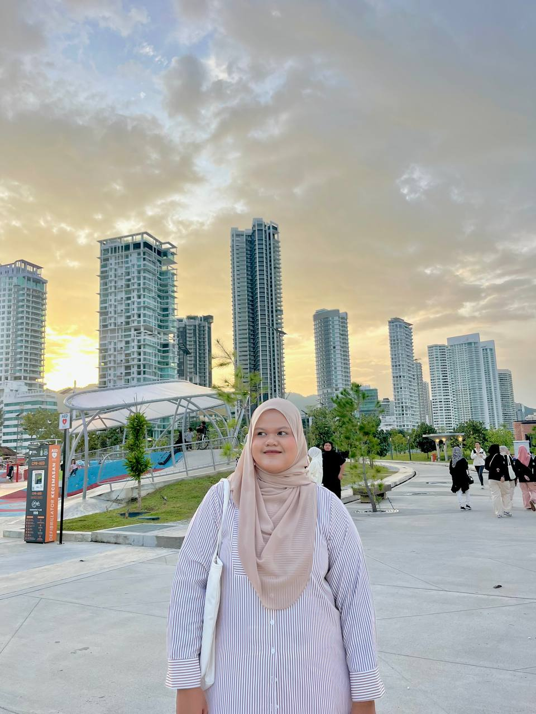

|
- NAME: Nur Dini Bt Romli.
- AGE: 20 years old.
- BIRTHPLACE: Hospital Seri Manjung.
- SIBLINGS: I am the fourth of five siblings and come from Manjung, Perak.
- HOBBY: I used to love watching K-dramas, but lately, they have started to feel boring.
- FAVORITE FOODS: I’m not a picky eater and enjoy trying different kinds of food.
- DREAMS: My dream was to become a doctor, but unfortunately, I couldn’t achieve it.
- VALUABLE MEMORIES: I appreciate friendship and the people who surround me.
|

|